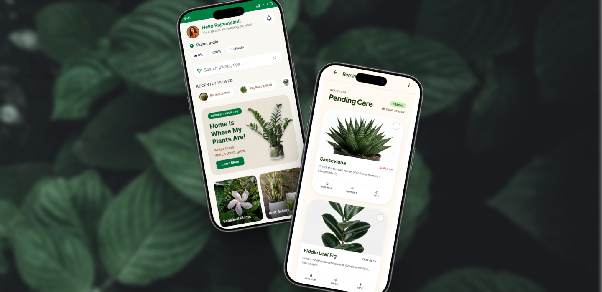
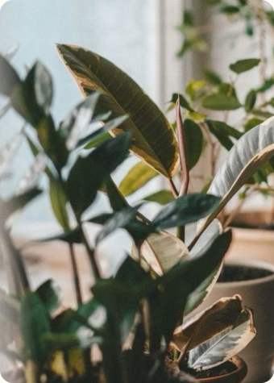
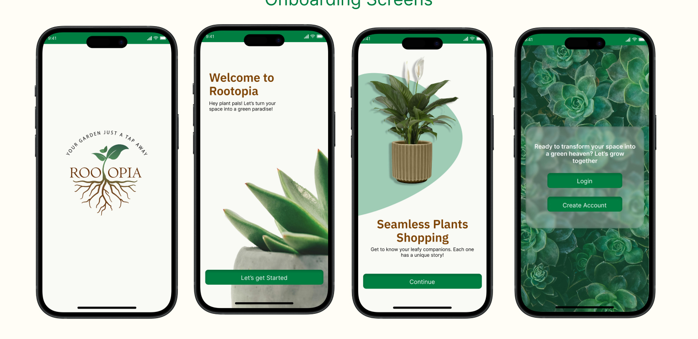
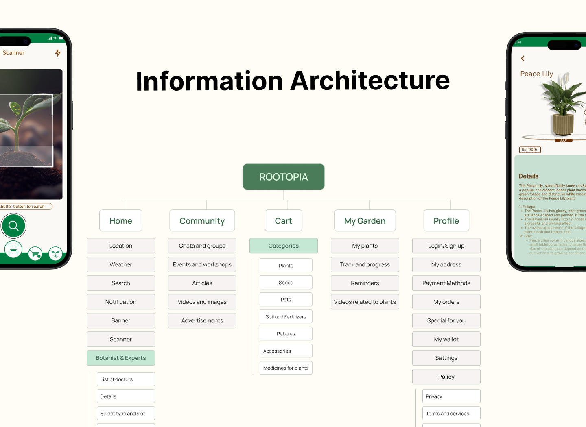
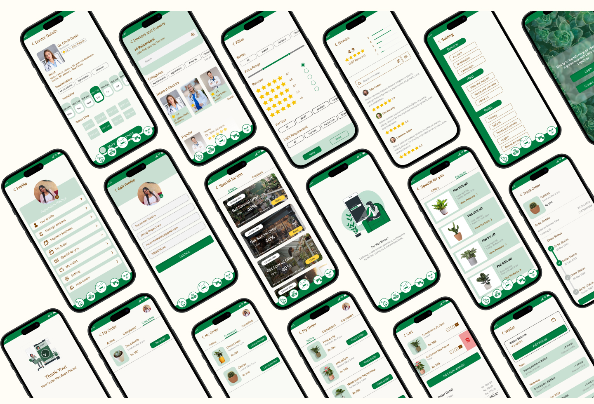

The real problem isn’t buying plants. It’s keeping them alive.
An all-in-one plant companion: buy plants, get care guidance for your climate, and never miss a watering.

- Role
- UX/UI Designer
- Platform
- Mobile app
- Duration
- 3 months
- Research
- Survey · 102 participants
People are too busy for nurseries, and the plants they do buy don’t survive.
Bad advice, fading motivation and guidance that ignores the local climate. Three reasons keep coming up:
- 01Information overload. Conflicting care tips confuse people and harm plants.
- 02Low retention. Excitement fades fast after the first purchase.
- 03Generic guidance. One-size-fits-all advice doesn’t work across climates.

What 102 people told us
An online survey to understand who buys plants, why, and where care breaks down.
Who they are
Motivation: hobby 61%, aesthetic 45%, air purification 38%.
Top care challenges
- Struggling with pests55%
- Inconsistent watering49%
- Difficulty finding plants37%
Quality over price
Will pay more for guaranteed plant health and vetted sourcing.
Visuals + info
Want rich imagery alongside detailed care instructions.
Want to discover
Asked for a matchmaker that suggests plants for their space.
Open to AR
Keen to preview a plant’s size and placement in their own room.
One app. The full journey.
Buying, learning and caring in one place, so nobody leaves the app to figure out what to do next.
Buy online
Order to your door, filtered by space, climate and care level.
→ Difficulty finding plantsSmart reminders
Watering alerts set at purchase, adjustable anytime.
→ Inconsistent wateringPlant info
Water, light, space and climate tips on every plant.
→ Information overloadPlant scan
Identify any plant or diagnose a problem with the camera.
→ Struggling with pests
Onboarding that sets the tone
Four screens, one idea each, ending at a single choice: log in or create an account.

Five tabs, one per job
Home, Community, Cart, My Garden and Profile. The scanner sits in the centre of the tab bar because it’s the fastest route to help.

Main screens and the thinking behind them
The full system
